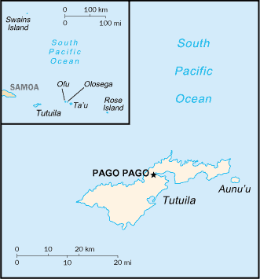
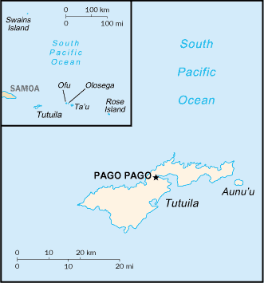

-
Introduction :: American Samoa
-
Background:Settled as early as 1000 B.C., Samoa was not reached by European explorers until the 18th century. International rivalries in the latter half of the 19th century were settled by an 1899 treaty in which Germany and the US divided the Samoan archipelago. The US formally occupied its portion - a smaller group of eastern islands with the excellent harbor of Pago Pago - the following year.
-
Geography :: American Samoa
-
Location:Oceania, group of islands in the South Pacific Ocean, about halfway between Hawaii and New ZealandGeographic coordinates:14 20 S, 170 00 WMap references:OceaniaArea:total: 224 sq kmland: 224 sq kmwater: 0 sq km
note: includes Rose Island and Swains Island
country comparison to the world: 216Area - comparative:slightly larger than Washington, DCLand boundaries:0 kmCoastline:116 kmMaritime claims:territorial sea: 12 nmexclusive economic zone: 200 nmClimate:tropical marine, moderated by southeast trade winds; annual rainfall averages about 3 m; rainy season (November to April), dry season (May to October); little seasonal temperature variationTerrain:five volcanic islands with rugged peaks and limited coastal plains, two coral atolls (Rose Island, Swains Island)Elevation:0 m lowest point: Pacific Ocean964 highest point: Lata MountainNatural resources:pumice, pumiciteLand use:agricultural land: 21.8% (2014 est.)arable land: 61.22% (2014 est.) / permanent crops: 38.78% (2014 est.) / permanent pasture: 0% (2014 est.)forest: 78.2% (2014 est.)other: 0% (2014 est.)Irrigated land:0 sq km (2012)Natural hazards:cyclones common from December to March
volcanism: limited volcanic activity on the Ofu and Olosega Islands; neither has erupted since the 19th century
Environment - current issues:limited supply of drinking water; pollution; waste disposal; coastal and stream alteration; soil erosionGeography - note:Pago Pago has one of the best natural deepwater harbors in the South Pacific Ocean, sheltered by shape from rough seas and protected by peripheral mountains from high winds; strategic location in the South Pacific Ocean -
People and Society :: American Samoa
-
Population:50,826 (July 2018 est.)country comparison to the world: 211Nationality:noun: American Samoan(s) (US nationals)adjective: American SamoanEthnic groups:Pacific Islander 92.6% (includes Samoan 88.9%, Tongan 2.9%, other .8%), Asian 3.6% (includes Filipino 2.2%, other 1.4%), mixed 2.7%, other 1.2% (2010 est.)note: data represent population by ethnic origin or raceLanguages:Samoan 88.6% (closely related to Hawaiian and other Polynesian languages), English 3.9%, Tongan 2.7%, other Pacific islander 3%, other 1.8% (2010 est.)
note: most people are bilingual
Religions:Christian 98.3%, other 1%, unaffiliated 0.7% (2010 est.)Age structure:0-14 years: 29.59% (male 7,732 /female 7,305)15-24 years: 18.42% (male 4,695 /female 4,669)25-54 years: 36.79% (male 9,255 /female 9,442)55-64 years: 8.96% (male 2,244 /female 2,310)65 years and over: 6.24% (male 1,486 /female 1,688) (2018 est.)population pyramid: The World Factbook Field Image ModalAustralia - Oceania :: American Samoa Print
The World Factbook Field Image ModalAustralia - Oceania :: American Samoa Print Image DescriptionThis is the population pyramid for American Samoa. A population pyramid illustrates the age and sex structure of a country's population and may provide insights about political and social stability, as well as economic development. The population is distributed along the horizontal axis, with males shown on the left and females on the right. The male and female populations are broken down into 5-year age groups represented as horizontal bars along the vertical axis, with the youngest age groups at the bottom and the oldest at the top. The shape of the population pyramid gradually evolves over time based on fertility, mortality, and international migration trends.
Image DescriptionThis is the population pyramid for American Samoa. A population pyramid illustrates the age and sex structure of a country's population and may provide insights about political and social stability, as well as economic development. The population is distributed along the horizontal axis, with males shown on the left and females on the right. The male and female populations are broken down into 5-year age groups represented as horizontal bars along the vertical axis, with the youngest age groups at the bottom and the oldest at the top. The shape of the population pyramid gradually evolves over time based on fertility, mortality, and international migration trends.
For additional information, please see the entry for Population pyramid on the Definitions and Notes page under the References tab.Median age:total: 26.1 yearsmale: 25.6 yearsfemale: 26.5 years (2018 est.)country comparison to the world: 151Population growth rate:-1.35% (2018 est.)country comparison to the world: 231Birth rate:19 births/1,000 population (2018 est.)country comparison to the world: 83Death rate:5.9 deaths/1,000 population (2018 est.)country comparison to the world: 166Net migration rate:-26.7 migrant(s)/1,000 population (2017 est.)country comparison to the world: 221Urbanization:urban population: 87.2% of total population (2018)rate of urbanization: 0.07% annual rate of change (2015-20 est.)Major urban areas - population:49,000 PAGO PAGO (capital) (2018)Sex ratio:at birth: 1.06 male(s)/female (2017 est.)0-14 years: 0.96 male(s)/female (2017 est.)15-24 years: 0.96 male(s)/female (2017 est.)25-54 years: 1.06 male(s)/female (2017 est.)55-64 years: 0.96 male(s)/female (2017 est.)65 years and over: 0.85 male(s)/female (2017 est.)total population: 1 male(s)/female (2017 est.)Infant mortality rate:total: 10.8 deaths/1,000 live births (2018 est.)male: 12.7 deaths/1,000 live births (2018 est.)female: 8.9 deaths/1,000 live births (2018 est.)country comparison to the world: 128Life expectancy at birth:total population: 73.9 years (2018 est.)male: 71.6 years (2018 est.)female: 76.2 years (2018 est.)country comparison to the world: 131Total fertility rate:2.57 children born/woman (2018 est.)country comparison to the world: 75Drinking water source:improved: urban: 100% of populationrural: 100% of populationtotal: 100% of populationunimproved: urban: 0% of populationrural: 0% of populationtotal: 0% of population (2015 est.)Sanitation facility access:improved: urban: 62.5% of population (2015 est.)rural: 62.5% of population (2015 est.)total: 62.5% of population (2015 est.)unimproved: urban: 37.5% of population (2015 est.)rural: 37.5% of population (2015 est.)total: 37.5% of population (2015 est.)HIV/AIDS - adult prevalence rate:NAHIV/AIDS - people living with HIV/AIDS:NAHIV/AIDS - deaths:NAMajor infectious diseases:note: active local transmission of Zika virus by Aedes species mosquitoes has been identified in this country (as of August 2016); it poses an important risk (a large number of cases possible) among US citizens if bitten by an infective mosquito; other less common ways to get Zika are through sex, via blood transfusion, or during pregnancy, in which the pregnant woman passes Zika virus to her fetus
Education expenditures:NA -
Government :: American Samoa
-
Country name:conventional long form: American Samoaconventional short form: American Samoaabbreviation: ASetymology: the name Samoa is composed of two parts, "sa" meaning "sacred" and "moa" meaning "center," so the name can mean Holy Center; alternatively, it can mean "place of the sacred moa bird" of Polynesian mythologyDependency status:unincorporated unorganized territory of the US; administered by the Office of Insular Affairs, US Department of the InteriorGovernment type:presidential democracy; a self-governing territory of the USCapital:name: Pago Pagogeographic coordinates: 14 16 S, 170 42 Wtime difference: UTC-11 (6 hours behind Washington, DC, during Standard Time)note: pronounced "pahn-go pahn-go"Administrative divisions:none (territory of the US); there are no first-order administrative divisions as defined by the US Government, but there are 3 districts and 2 islands* at the second order; Eastern, Manu'a, Rose Island*, Swains Island*, WesternIndependence:none (territory of the US)National holiday:Flag Day, 17 April (1900)Constitution:history: adopted 17 October 1960; revised 1 July 1967 (2017)amendments: proposed by either house of the Legislative Assembly; passage requires three-fifths majority vote by the membership of each house, approval in a referendum, and approval by the US Secretary of the Interior; amended 1971, 1977, 1979 (2017)Legal system:mixed legal system of US common law and customary lawCitizenship:see United StatesSuffrage:18 years of age; universalJudicial branch:highest courts: High Court of American Samoa (consists of the chief justice, associate chief justice, and 6 Samoan associate judges and organized into trial, family, drug, and appellate divisions); note - American Samoa has no US federal courtsjudge selection and term of office: chief justice and associate chief justice appointed by the US Secretary of the Interior to serve for life; Samoan associate judges appointed by the governor to serve for lifesubordinate courts: district and village courtsExecutive branch:chief of state: President Donald J. TRUMP (since 20 January 2017); Vice President Michael R. PENCE (since 20 January 2017)head of government: Governor Lolo Matalasi MOLIGA (since 3 January 2013)cabinet: Cabinet consists of 12 department directors appointed by the governor with the consent of the Legislature or Fonoelections/appointments: president and vice president indirectly elected on the same ballot by an Electoral College of 'electors' chosen from each state to serve a 4-year term (eligible for a second term); under the US Constitution, residents of unincorporated territories, such as American Samoa, do not vote in elections for US president and vice president; however, they may vote in Democratic and Republican presidential primary elections; governor and lieutenant governor directly elected on the same ballot by absolute majority popular vote in 2 rounds if needed for a 4-year term (eligible for a second term); election last held on 8 November 2016 (next to be held in November 2020)election results: Lolo Matalasi MOLIGA reelected governor in first round; percent of vote - Lolo Matalasi MOLIGA (independent) 60.2%, Faoa Aitofele SUNIA (Democratic Party) 35.8%, Tuika TUIKA (independent) 4%Legislative branch:description: bicameral Legislature or Fono consists of:
Senate (18 seats; members indirectly selected by regional governing councils to serve 4-year terms)
House of Representatives (21 seats; 20 members directly elected by simple majority vote and 1 decided by public meeting on Swains Island; members serve 2-year terms)elections:
Senate - last held on 8 November 2016 (next to be held in November 2020)
House of Representatives - last held on 6 November 2018 (next to be held in November 2020)election results:
Senate - percent of vote by party - NA; seats by party - independent 18; composition - men 17, women 1, percent of women 9.5%
House of Representatives - percent of vote by party - NA; seats by party - NA; composition - men 14, women 7, percent of women 33.3%; note - total percent of women in Legislature 20.5%note: American Samoa elects 1 member by simple majority vote to serve a 2-year term as a delegate to the US House of Representatives; the delegate can vote when serving on a committee and when the House meets as the Committee of the Whole House, but not when legislation is submitted for a “full floor” House vote; election of delegate last held on 6 November 2018 (next to be held in November 2020)Political parties and leaders:Democratic Party [Fagafaga Daniel LANGKILDE]
Republican Party [Utu Abe MALAE, chairman]International organization participation:AOSIS (observer), Interpol (subbureau), IOC, PIF (observer), SPCDiplomatic representation in the US:none (territory of the US)Diplomatic representation from the US:none (territory of the US)Flag description:blue, with a white triangle edged in red that is based on the fly side and extends to the hoist side; a brown and white American bald eagle flying toward the hoist side is carrying 2 traditional Samoan symbols of authority, a war club known as a "fa'alaufa'i" (upper; left talon), and a coconut-fiber fly whisk known as a "fue" (lower; right talon); the combination of symbols broadly mimics that seen on the US Great Seal and reflects the relationship between the US and American SamoaNational symbol(s):a fue (coconut fiber fly whisk; representing wisdom) crossed with a to'oto'o (staff; representing authority); national colors: red, white, blueNational anthem:name: "Amerika Samoa" (American Samoa)lyrics/music: Mariota Tiumalu TUIASOSOPO/Napoleon Andrew TUITELELEAPAGAnote: local anthem adopted 1950; as a territory of the United States, "The Star-Spangled Banner" is official (see United States)
-
Economy :: American Samoa
-
Economy - overview:
American Samoa s a traditional Polynesian economy in which more than 90% of the land is communally owned. Economic activity is strongly linked to the US with which American Samoa conducts most of its commerce. Tuna fishing and processing are the backbone of the private sector with processed fish products as the primary exports. The fish processing business accounted for 15.5% of employment in 2015.
In late September 2009, an earthquake and the resulting tsunami devastated American Samoa and nearby Samoa, disrupting transportation and power generation, and resulting in about 200 deaths. The US Federal Emergency Management Agency oversaw a relief program of nearly $25 million. Transfers from the US Government add substantially to American Samoa's economic well-being.
Attempts by the government to develop a larger and broader economy are restrained by Samoa's remote location, its limited transportation, and its devastating hurricanes. Tourism has some potential as a source of income and jobs.
GDP (purchasing power parity):$658 million (2016 est.)$674.9 million (2015 est.)$666.9 million (2014 est.)note: data are in 2016 US dollars
country comparison to the world: 209GDP (official exchange rate):$658 million (2016 est.) (2016 est.)GDP - real growth rate:-2.5% (2016 est.)1.2% (2015 est.)1% (2014 est.)country comparison to the world: 208GDP - per capita (PPP):$11,200 (2016 est.)$11,300 (2015 est.)$11,200 (2014 est.)country comparison to the world: 134GDP - composition, by end use:household consumption: 66.4% (2016 est.)government consumption: 49.7% (2016 est.)investment in fixed capital: 7.3% (2016 est.)investment in inventories: 5.1% (2016 est.)exports of goods and services: 65% (2016 est.)imports of goods and services: -93.5% (2016 est.)GDP - composition, by sector of origin:agriculture: 27.4% (2012)industry: 12.4% (2012)services: 60.2% (2012)Agriculture - products:bananas, coconuts, vegetables, taro, breadfruit, yams, copra, pineapples, papayas; dairy products, livestockIndustries:tuna canneries (largely supplied by foreign fishing vessels), handicraftsIndustrial production growth rate:NALabor force:17,850 (2015 est.)country comparison to the world: 213Labor force - by occupation:agriculture: NAindustry: 15.5%services: 46.4% (2015 est.)Unemployment rate:29.8% (2005)country comparison to the world: 206Population below poverty line:NABudget:revenues: 249 million (2016 est.)expenditures: 262.5 million (2016 est.)Taxes and other revenues:37.8% (of GDP) (2016 est.)country comparison to the world: 53Budget surplus (+) or deficit (-):-2.1% (of GDP) (2016 est.)country comparison to the world: 107Public debt:12.2% of GDP (2016 est.)country comparison to the world: 197Fiscal year:1 October - 30 SeptemberInflation rate (consumer prices):-0.5% (2015 est.)1.4% (2014 est.)country comparison to the world: 5Exports:$428 million (2016 est.)$427 million (2015 est.)country comparison to the world: 179Exports - partners:Australia 25%, Ghana 19%, Indonesia 15.6%, Burma 10.4%, Portugal 5.1% (2017)Exports - commodities:canned tuna 93%Imports:$615 million (2016 est.)$657 million (2015 est.)country comparison to the world: 193Imports - commodities:raw materials for canneries, food, petroleum products, machinery and partsImports - partners:Fiji 10.7%, Singapore 10.4%, NZ 10.4%, South Korea 9.3%, Samoa 8.2%, Kenya 6.4%, Australia 5.2% (2017)Debt - external:NA
Exchange rates:the US dollar is used
-
Energy :: American Samoa
-
Electricity access:population without electricity: 22,219 (2012)electrification - total population: 59% (2012)electrification - urban areas: 60% (2012)electrification - rural areas: 45% (2012)Electricity - production:169 million kWh (2016 est.)country comparison to the world: 195Electricity - consumption:157.2 million kWh (2016 est.)country comparison to the world: 197Electricity - exports:0 kWh (2016 est.)country comparison to the world: 97Electricity - imports:0 kWh (2016 est.)country comparison to the world: 118Electricity - installed generating capacity:43,000 kW (2016 est.)country comparison to the world: 195Electricity - from fossil fuels:98% of total installed capacity (2016 est.)country comparison to the world: 27Electricity - from nuclear fuels:0% of total installed capacity (2017 est.)country comparison to the world: 35Electricity - from hydroelectric plants:0% of total installed capacity (2017 est.)country comparison to the world: 152Electricity - from other renewable sources:2% of total installed capacity (2017 est.)country comparison to the world: 131Crude oil - production:0 bbl/day (2017 est.)country comparison to the world: 102Crude oil - exports:0 bbl/day (2015 est.)country comparison to the world: 83Crude oil - imports:0 bbl/day (2015 est.)country comparison to the world: 86Crude oil - proved reserves:0 bbl (1 January 2018 est.)country comparison to the world: 100Refined petroleum products - production:0 bbl/day (2015 est.)country comparison to the world: 111Refined petroleum products - consumption:2,375 bbl/day (2016 est.)country comparison to the world: 192Refined petroleum products - exports:0 bbl/day (2015 est.)country comparison to the world: 125Refined petroleum products - imports:2,346 bbl/day (2015 est.)country comparison to the world: 188Natural gas - production:0 cu m (2017 est.)country comparison to the world: 97Natural gas - consumption:0 cu m (2017 est.)country comparison to the world: 117Natural gas - exports:0 cu m (2017 est.)country comparison to the world: 59Natural gas - imports:0 cu m (2017 est.)country comparison to the world: 84Natural gas - proved reserves:0 cu m (1 January 2014 est.)country comparison to the world: 103Carbon dioxide emissions from consumption of energy:361,100 Mt (2017 est.)country comparison to the world: 189
-
Communications :: American Samoa
-
Telephones - fixed lines:total subscriptions: 10,000 (July 2016 est.)subscriptions per 100 inhabitants: 18 (July 2016 est.)country comparison to the world: 196Telephone system:general assessment: good telex, telegraph, facsimile, and cellular telephone services; one of the most complete and modern telecommunications systems in the South Pacific Islands; all inhabited islands have telephone connectivity (2017)domestic: 18 per 100 fixed-line teledensity, domestic satellite system with 1 Comsat earth station (2017)international: country code - 1-684; satellite earth station - 1 (Intelsat-Pacific Ocean)Broadcast media:3 TV stations; multi-channel pay TV services are available; about a dozen radio stations, some of which are repeater stations (2009)Internet country code:.asInternet users:total: 17,000 (July 2016 est.)percent of population: 31.3% (July 2016 est.)country comparison to the world: 207
-
Transportation :: American Samoa
-
Airports:3 (2016)country comparison to the world: 192Airports - with paved runways:total: 3 (2017)over 3,047 m: 1 (2017)914 to 1,523 m: 1 (2017)under 914 m: 1 (2017)Roadways:total: 241 km (2008)country comparison to the world: 208Ports and terminals:major seaport(s): Pago Pago
-
Military and Security :: American Samoa
-
Military - note:defense is the responsibility of the US
-
Transnational Issues :: American Samoa
-
Disputes - international:Tokelau included American Samoa's Swains Island (Olosega) in its 2006 draft independence constitution
Australia - Oceania ::
American Samoa